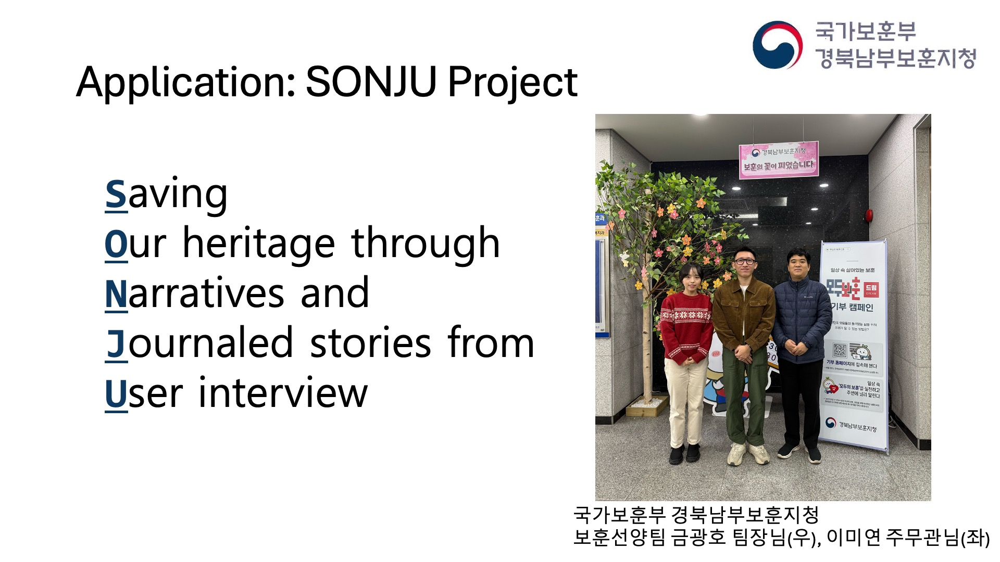
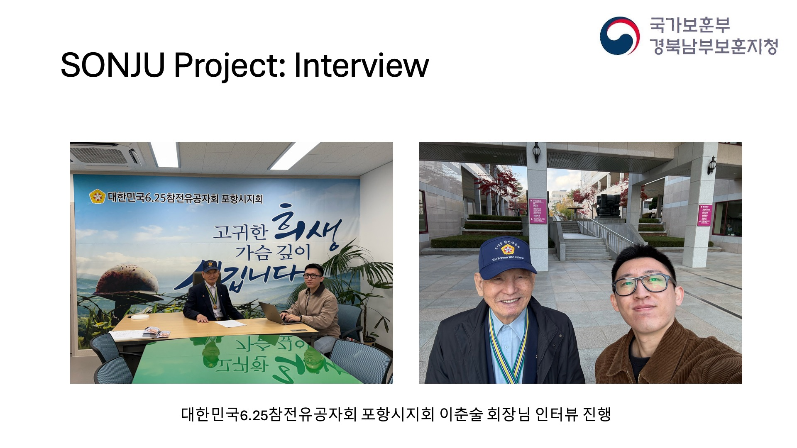
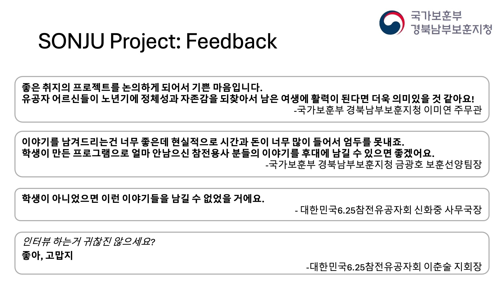

Recent advancements in Large Language Models (LLMs) have enabled automated natural language processing for complex tasks. This research presents a framework that allows elderly users to create biographies through conversations with a chatbot, preserving their life stories while enhancing their sense of self-worth. The framework consists of two key components: (1) Multi-session RAG Pipeline, which structures interviews into multiple sessions using a chatbot to collect and manage personal narratives efficiently, and (2) Auto Biography Writing System, which generates coherent biographies using a Chain-of-Thought strategy and a Divide and Conquer approach. Experimental results show that the chatbot-based interview system reduces interview fatigue and improves engagement, with a 62% preference rate, while the writing system achieved an 86% win rating, demonstrating its effectiveness. This research has been expanded into the SONJU Project, collaborating with veterans' organizations to apply the framework in real-world settings, confirming its social and historical significance.
SONJU(Saving Our heritage through Narratives and Journaled stories from User interview, "sonju" is grandchild in Korean) project aims to save veterans stories using Conversational Auto Biography Writing Framework. Collaborated with Ministry of Patriots and Veterans Affairs, Gyeongbuk Southern Veterans Affairs Administration (국가보훈부 경북남부보훈지청). Wrote biography of Mr. Lee, a Korean War veteran, using the framework.



My project was selected as 3rd place overall (HW + SW) and 1st place in SW at Convergence IT Design Demo Day. Below is my interview video.